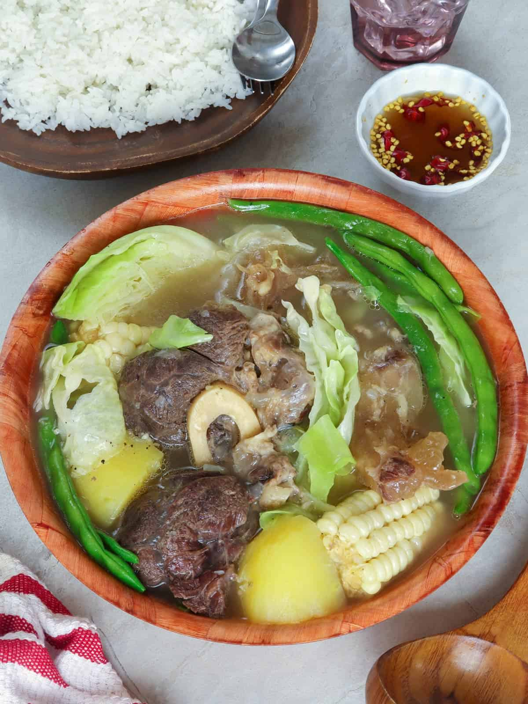

Beef Nilaga according to ChatGPT:

Beef nilaga is a comforting and hearty Filipino soup that's perfect for cold days or when you're craving a
nourishing meal. Enjoy!
Ingredients:
- 500 grams beef (preferably stewing beef), cut into cubes
- 2 potatoes, peeled and quartered
- 1 onion, sliced
- 2 cloves of garlic, minced
- 1 medium-sized cabbage, chopped into large pieces
- 2 tablespoons fish sauce (or to taste)
- Salt and pepper to taste
- Water
- Optional: whole black peppercorns, bay leaves
Steps:
- In a large pot, heat some oil over medium heat. Add the onions and garlic, and sauté until the onions become
translucent and the garlic is fragrant.
- Add the beef cubes to the pot and cook until they brown slightly on all sides. This helps enhance the flavor of
the dish.
- Pour enough water into the pot to cover the beef. If desired, you can also add a few whole black peppercorns
and bay leaves for added flavor. Bring the water to a boil.
- Once boiling, reduce the heat to low and let the beef simmer for about 1 to 2 hours, or until it becomes
tender. Skim off any impurities or foam that rise to the surface during simmering.
- Once the beef is tender, add the potatoes to the pot and continue simmering until they are cooked through and
soft.
- Next, add the cabbage to the pot and let it cook for about 5 minutes or until it becomes tender but still
slightly crisp. Adding the cabbage towards the end helps retain its freshness and texture.
- Season the dish with fish sauce, salt, and pepper according to your taste preferences. Adjust the seasoning as
needed.
- Simmer for an additional 5 minutes to let the flavors meld together. Check the seasoning one final time and
make any necessary adjustments.
- Remove the pot from the heat and serve the beef nilaga hot. It is commonly enjoyed with steamed rice.